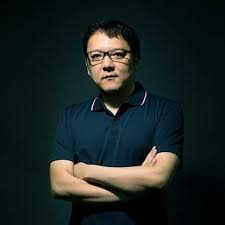
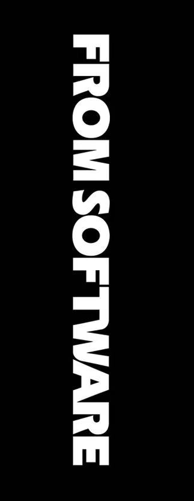
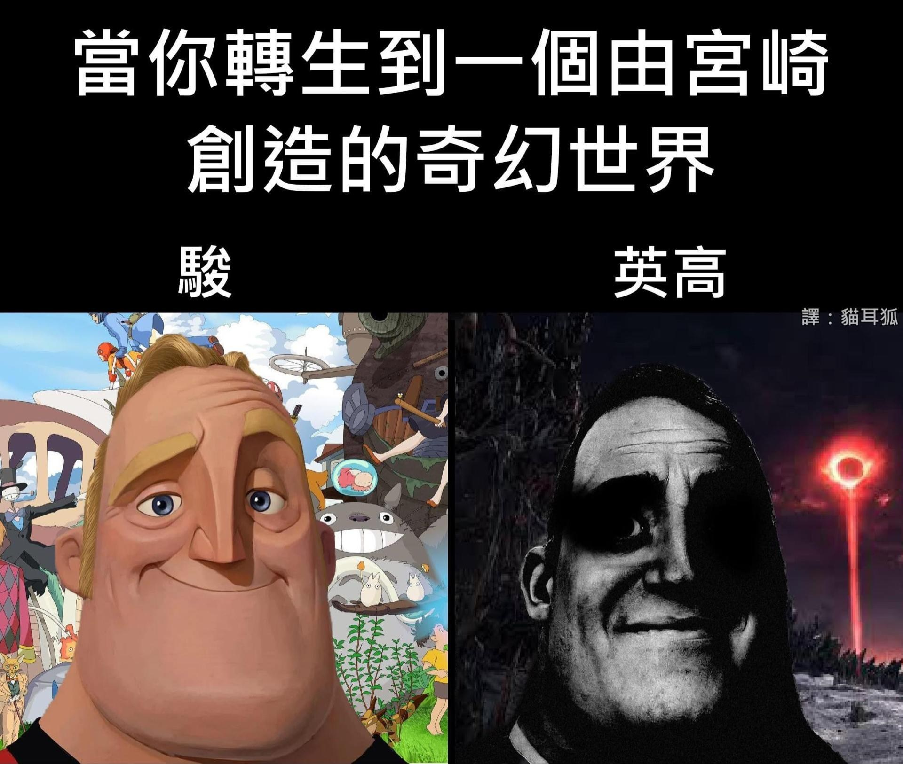

Hidetaka Miyazaki is a renowned Japanese game producer and president of FromSoftware. He served as director for the vast majority of FromSoftware's Soulsborne games, such as Sekiro, Elden Ring, and Dark Souls. he can be considered the father of the Soulsborne games genre.However, Miyazaki initially started as an employee of FromSoftware. His success was a serendipitous event. The so-called progenitor of Soulsborne games, "Demon's Souls," was initially a project on the verge of being abandoned. But Miyazaki took it on, scrapped it, and started over, resulting in a "Soulsborne games" with a distinctly Miyazaki personal style.

Hidetaka Miyazaki's Childhood: Many players found the games by Hidetaka Miyazaki too difficult, leading to the conclusion that art imitates life. It's believed that Miyazaki suffered greatly in his childhood, which inspired his game designs. Difficulties in the games include: challenging side quests, doors that cannot be opened from one side, long distances, and dangerous traps.
A joke about Hayao Miyazaki and Hidetaka Miyazaki: Some people confuse Hayao Miyazaki and Hidetaka Miyazaki, yet their artistic styles are completely opposite. Miyazaki is known for his warm, beautiful, and healing animated films. Miyazaki, on the other hand, creates games filled with darkness, disgust, and horror. What's even funnier is that someone called one of them "Gong Qi Ying Jun"
